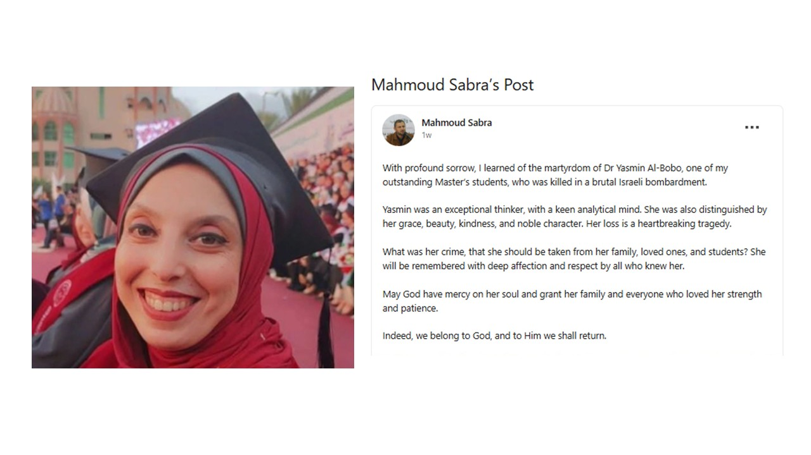

Con profondo dolore ho appreso del martirio della Dott.ssa Yasmin Al-Bobo, una delle mie brillanti studentesse del Master, uccisa in un brutale bombardamento israeliano.
Yasmin era una pensatrice eccezionale, dotata di una mente analitica acuta. Si distingueva inoltre per la sua grazia, bellezza, gentilezza e nobiltà d'animo. La sua perdita è una tragedia straziante.
Quale crimine ha commesso, per essere strappata alla sua famiglia, ai suoi cari e ai suoi studenti? Sarà ricordata con profondo affetto e rispetto da tutti coloro che l'hanno conosciuta.
Che Dio abbia pietà della sua anima e doni alla sua famiglia e a tutti coloro che l'hanno amata forza e pazienza.
In verità, apparteniamo a Dio e a Lui ritorneremo.